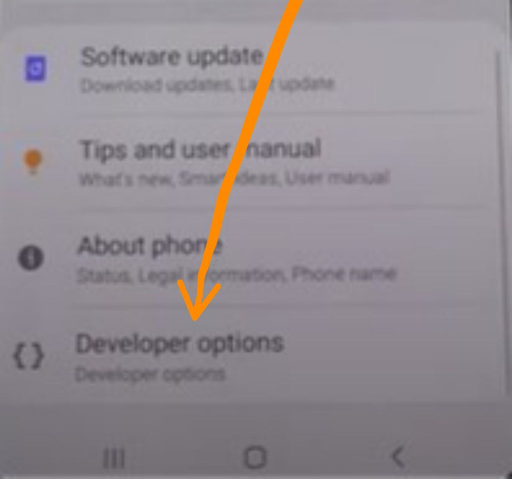

A30s Full AOSP Flashing Guide
Sanji • December 6, 2023 at 20:55
⚠️⚠️⚠️
- Your warranty is now void.
- I am not responsible for bricked devices, dead SD cards,
- thermonuclear war, or you getting fired because the alarm app failed. Please
- do some research if you have any concerns about features included in this ROM
- before flashing it! YOU are choosing to make these modifications, and if
- you point the finger at me for messing up your device, I will laugh at you.
Step 1: Unlocking Bootloader 📱
🚨Your device will be factory reset so take a backup of your necessary file and media
Pre requirements
- Your device (obviously duhh)
- A Pc/laptop
- Samsung drivers installed in pc [click]
- Your charging cable/or any working usb cable
Follow the steps
- Go to settings
- Tap on about phone
- Tap on Software information
- Tap rapidly on build number for 7times
- Go back
- You'll find a new option call Developer Options

- click on it and you'll see a option call OEM unlocking, turn it on
- This how it should look like
- Now turn off your device
- After it's completely turned off
- Hold both volume up and down buttons and connect the USB cable (make sure the usb already connected to your pc)
- You should see something like
This
- long press volume up button as it's written in there
- After page new appears again press volume up once
- Now your phone will boot and show a warning ⚠️ screen about bootloader being unlocked
- You can wait for 10 seconds or just press the power button to continue
- After device booted,, set it up like normally you would do 📱
Congratulations first step is complete💯
I recommend to watch some YouTube videos about Samsung bootloader unlocking for more information cuz it's much easier than other devices.
Now lets get to the good parts🔫
Step 2: Flashing TWRP recovery
Pre requirements
Less goo
- Turn off your device
- Now hold both volume down and up button and connect USB just like you did in bootloader unlocking step
- After this screen appears
- Click volume up button once
- You'll see download mode
Few things to be concern about
- 🚨See if the frp lock and oem lock is off
- ⚠️You might get kg state: checking at the place where its written current binary,its okay
- ⚠️⚠️If kg state:prenormal follow xda guide to fix it
- Everything else is okay
Now move to pc💻
🚨
Hope you already installed the drivers and and rebooted you pc
If not than your PC won't recognize your Samsung device
- Open Odin software
- Put the twrp-3.4.0-0-black-a30s.tar file on ap slot
Like this
- go to options and uncheck auto reboot
- Do same as shown
- If your device already connected to pc or you are connecting now
You'll see this
- 🚨If not showing,, you messed up driver installation
Install the correct drivers and reboot pc
- Now Click on start
green pass=succes
This part is a bit tricky read and follow carefully 🤠
because we unchecked auto reboot phone will still be in download mode, so we need to manually boot the device into recovery but if you boot it on stock rom the twrp recovery will be replaced with stock recovery and you have to do the twrp installation step once again :P
Follow my lead 😎
- Hold volume down and power button
- As soon as screen goes black release volume down button and quickly hold volume up button (do not release power key)
- Keep holding the volume up and power until twrp logo appears
- Now swipe into it and format data quickly
Its old twrp so its kinda buggy it freezes after few minutes so you have to do the steps as quickly as possible
After formating data
- Move the TWRP 3.7 image to you device from PC (sd card would be good too)
- Now tap on install and navigate to the folder you where you moved twrp imgae
- On the right down corner there is a option call "install image" click it
- Then twrp image will appear
- Click it
- Select recovery
- Flash
- Now go back to restart manu and reboot to recovery
Now your phone will boot into latest twrp
congratulations 👏 🎉 you got the hard part done ✅
⚠️ ⚠️ ⚠️ ⚠️
Seems like after installing this twrp Sim Signal drops Continuously
https://t.me/tw02cloud/172
(You have to do this once,,after sim fixed you can flash any AOSP)
(keep in mind this is just a one time thing. You don't have to do this step after network is fixed untill you flash stock rom again lmao)
Step 3: flashing any AOSP rom
- go to wipe section
- Tap on advanced wipe
- Select data,system.vendor,cache,dalvik,product
- And wipe them
- Now move the ROM zip to your phone's internal storage or you can use sd card or other drives with OTG adapter
- Simply flash the ROM
- After flashing is complete
- If you flashed Vanilla ROM you need to flash gapps now cuz vanilla rom does not come with google services
- We recommend bitgapps(google it)
Ok AOSP flashed successfully 👌 Reboot and enjoy the ROM now 😁
Yo Advanced users want ksu?😎
Flash eureka kernel r15 a30s aosp.zip or the new one if available
https://t.me/eureka_support_group
- Flash in TWRP
- It will open the installer
- Next
- Click on 2nd option to configure
- Select these
- Aosp (new)
- Enforcing
- Dtbo5 (most stable)
- Patched dm variety Yes
- Install